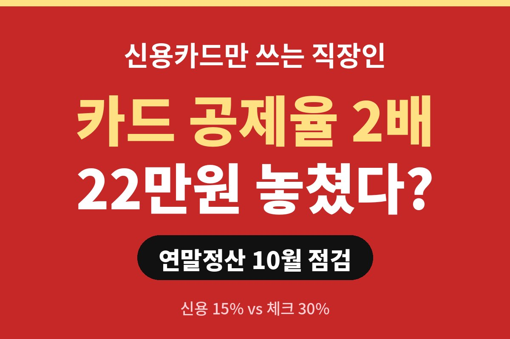
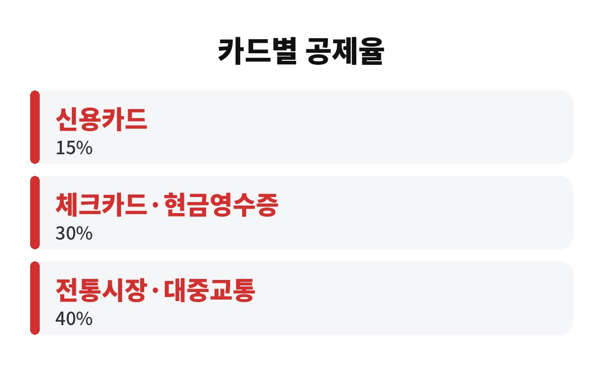

연말정산 카드 공제율은 신용카드 15%, 체크카드와 현금영수증 30%로 정확히 2배 차이가 나요. 같은 1,000만원을 써도 공제받는 금액이 150만원 vs 300만원으로 갈리고, 세금으로 따지면 약 22만원 차이가 날 수 있어요.
월급쟁이인데 결제는 전부 신용카드로 하고 계셨다면, 올해 남은 두 달이 중요해요. 지금부터 어떻게 쓰면 되는지 하나씩 풀어볼게요.
카드 소득공제는 쓴 돈 전부를 깎아주는 게 아니에요. 총급여의 25%를 넘게 쓴 부분부터 공제 대상이 돼요. 이 기준을 최저 사용금액이라고 부르죠. 총급여가 4,000만원이면 1,000만원까지는 아무리 써도 공제가 0원이에요.
그 선을 넘은 금액에 공제율이 붙는데, 널리 알려진 기준은 이래요. 신용카드 15%, 체크카드·현금영수증 30%, 전통시장과 대중교통 40%예요. 연말정산 카드 공제율 중에서 체크카드가 신용카드의 두 배라는 게 핵심이에요.
| 결제 수단 | 공제율 |
| 신용카드 | 15% |
| 체크카드·현금영수증 | 30% |
| 전통시장·대중교통 | 40% |

단순하게 계산해 볼게요. 총급여 4,000만원인 직장인이 올해 카드로 2,000만원을 쓴다고 해봐요. 최저 사용금액 1,000만원을 빼면 공제 대상은 1,000만원이에요.
이 1,000만원이 전부 신용카드라면 공제액은 150만원이고, 전부 체크카드라면 300만원이에요. 공제액 차이는 150만원이죠. 세율 15% 구간이라고 가정하면 150만원 × 15%로 약 22만 5천원을 더 돌려받는 셈이에요. 지방소득세까지 따지면 조금 더 커져요.
물론 실제로는 최저 사용금액을 채우는 순서나 개인별 세율에 따라 결과가 달라져요. 그래도 방향은 분명해요. 같은 돈을 써도 결제 수단만 바꾸면 환급이 달라진다는 거예요.
그건 아니에요. 공제에는 한도가 있어요. 총급여 7,000만원 이하라면 보통 연 300만원까지만 공제돼요. 이미 한도를 채울 만큼 썼다면 체크카드로 바꿔도 더 돌려받지 못해요.
그래서 순서가 중요해요. 먼저 올해 쓴 금액이 총급여의 25%를 넘었는지 확인하세요. 아직 못 넘었다면 이 구간은 어차피 공제가 안 되니 신용카드 혜택(할인, 포인트)을 챙기는 게 이득일 수 있어요. 25%를 넘긴 뒤부터는 체크카드와 현금영수증으로 갈아타는 게 유리하죠.
또 신용카드를 쓰면 혜택이 있는 경우도 있어요. 공제로 돌려받는 금액과 카드 할인 혜택을 비교해서 큰 쪽을 고르면 돼요. 이 계산이 귀찮다면 월급날 기준으로 "25% 넘은 뒤엔 체크카드"만 기억해도 충분해요.
배우자나 부모님 카드 사용액도 요건이 맞으면 합산할 수 있어요. 다만 소득이 있는 가족의 지출은 공제 대상이 되지 않는 경우가 많아서, 가족 중 누가 공제를 받을지 미리 정해두는 게 좋아요. 보통은 총급여가 높아 세율이 높은 쪽이 환급 효과가 더 커요.
예를 들어 맞벌이 부부라면 한 사람의 최저 사용금액(총급여의 25%)을 먼저 채우는 쪽에 몰아서 쓰는 게 효율적이에요. 두 사람이 따로따로 쓰면 둘 다 25% 문턱을 못 넘겨 공제를 하나도 못 받는 일이 생기거든요. 이런 건 연말에 닥쳐서 알면 이미 늦으니, 지금 10월에 한 번 점검해 보세요. 부부 둘이 앱을 열고 5분만 같이 확인해도 큰 차이가 생겨요.
첫째, 국세청 홈택스나 카드사 앱에서 올해 누적 사용액을 확인하세요. 둘째, 총급여의 25%를 넘겼는지 보세요. 셋째, 넘겼다면 남은 두 달 지출은 체크카드나 현금영수증으로 돌리세요. 마트, 병원 밖 생활비, 교통비가 대표적이에요.
대중교통과 전통시장은 공제율이 40%로 가장 높으니 출퇴근 교통비도 챙겨보세요. 결제 수단 하나 바꾸는 데 5분이면 충분한데, 연말정산 카드 공제율 덕분에 환급액이 달라질 수 있답니다.
여러분은 올해 카드를 어떻게 쓰고 계셨나요? 댓글로 알려주세요. 도움이 되셨다면 구독 눌러 주세요, 연말정산 팁 계속 올릴게요.
※ 본 글은 일반적인 정보 제공이며 투자 권유가 아닙니다. 공제율과 한도는 개인 상황과 세법 개정에 따라 달라질 수 있으니 국세청 안내를 확인하세요.